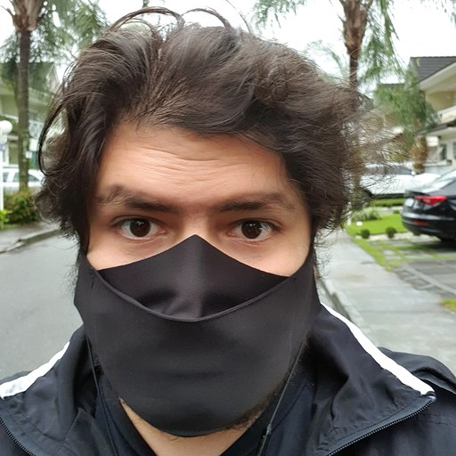

Pedro Medeiros

Sou brasileiro, nascido e criado no Rio de Janeiro, vulgo cidade maravilhosa,
vindo da área do Direito e mergulhando de cabeça no mundo da tecnologia.
Sempre fui curioso pela área e agora me apaixonando cada vez mais!
Principais habilidades:
- Adaptabilidade
- Vontade de aprender
- Facilidade de trabalhar em equipe
- Comunicação
- Foco
- Tranquilidade nas tomadas de decisão
Um blog que estou aprendendo e passo um tempo pesquisando coisas é o Stack Overflow.
Dá uma passadinha no meu Github depois! ;)
Aos poucos estou adicionando meus projetos no Github.
Em um futuro próximo, terá bastante coisa boa lá.